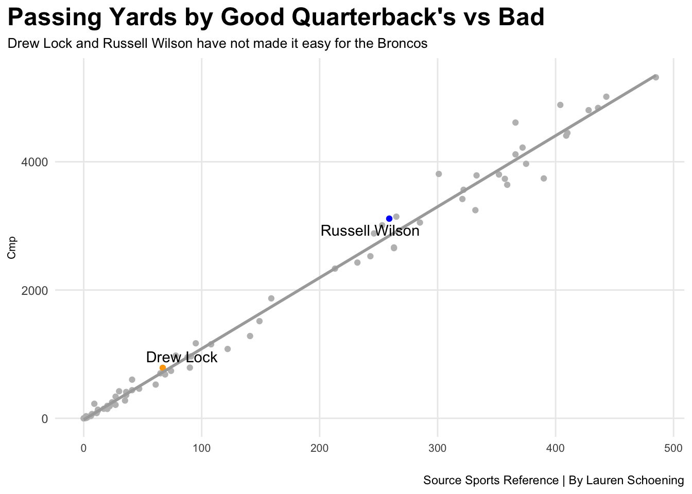
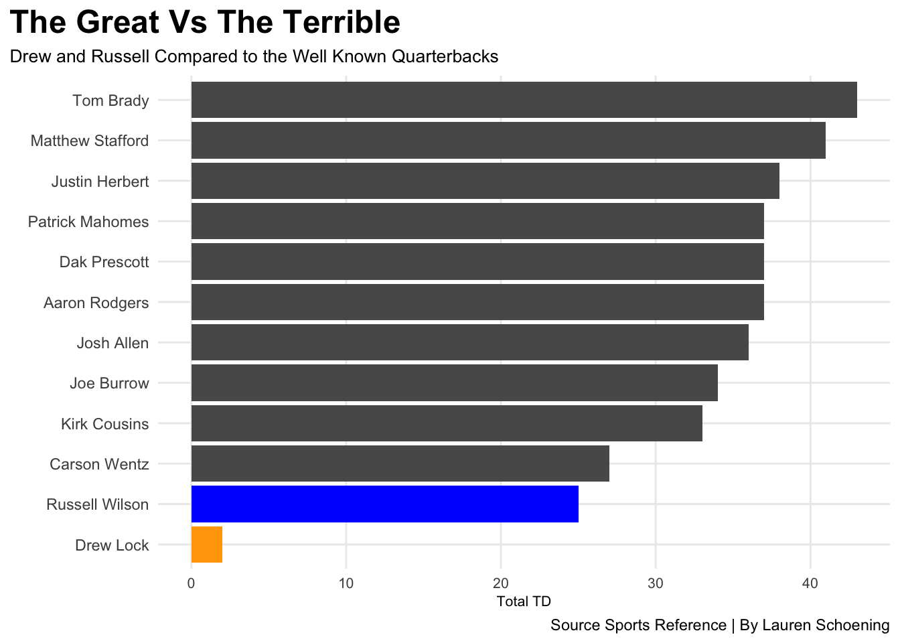

Who’s Better for the Broncos? Drew Lock or Russell Wilson?
nfl
code
analysis
Author
Lauren Schoening
Published
April 11, 2022
The Broncos were known for Peyton Manning leading them to Super Bowl wins and putting their name in big lights, but in the past seasons they have had some new guys hpoing to take the team to victory.
The Broncos took their chance on a man who had not yet had a chance to start in the NFL, Drew Lock. He showed the NFL league what he could do for two seasons before being traded by the Broncos. Could the Broncos do any better, or should they have given Drew more of a chance?
The Broncos could do better…
The next man for the job was someone who brought hope for most Broncos fans, Russell Wilson from the Seattle Seahawks. He had a major year before the Broncos brought him onto the lineup, but would he be better for the Broncos?
Maybe he would be but maybe not.
To find out who was better for the Broncos we will look at some statistics in many areas of the game and find out who in fact has a shot at leading the team.
Code
library(tidyverse)library(ggrepel)library(ggalt)qbs22 <-read_csv("quarterbacks22.csv") %>%mutate(Season =2022) %>%filter(Pos =="QB"| Pos =="qb" ) %>%mutate(Player =gsub("\\*", "", Player)) %>%mutate(Player =gsub("\\+", "", Player)) %>%rename(PassYds =`Yds...12`)qbs21 <-read_csv("quarterbacks21.csv") %>%mutate(Season =2021) %>%filter(Pos =="QB"| Pos =="qb" ) %>%mutate(Player =gsub("\\*", "", Player)) %>%mutate(Player =gsub("\\+", "", Player)) %>%rename(PassYds =`Yds...12`)qbs <-bind_rows(qbs22, qbs21) drew <- qbs21 %>%filter(Player =="Drew Lock")russ <- qbs21 %>%filter(Player =="Russell Wilson")ggplot() +geom_point(data=qbs21, aes(x=Cmp, y=PassYds), color="grey") +geom_point(data=drew, aes(x=Cmp, y=PassYds), color="orange") +geom_point(data=russ, aes(x=Cmp, y=PassYds), color="blue") +geom_smooth(data=qbs21, aes(x=Cmp, y=PassYds), method="lm", se=FALSE, color="dark grey") +geom_text_repel(data=drew, aes(x=Cmp, y=PassYds, label= Player))+geom_text_repel(data=russ, aes(x=Cmp, y=PassYds, label= Player))+labs(title="Passing Yards by Good Quarterback's vs Bad",subtitle ="Drew Lock and Russell Wilson have not made it easy for the Broncos",caption ="Source Sports Reference | By Lauren Schoening",x="",y="Cmp") +theme_minimal() +theme(plot.title =element_text(size =18, face ="bold"),axis.title =element_text(size =8),plot.subtitle =element_text(size =10),panel.grid.minor =element_blank(),axis.text.x =element_text(size =8),plot.title.position ="plot" )

Any Broncos fan knows that the last few seasons have been a major struggle not only as a team as a whole but having the quarterback to support the team. As any team knows the quarterback is what makes the game go round, so how bad have the last two Broncos quarterback been?
New names:
New names:
New names:
• `Yds...26` -> `Yds`
Code
ggplot() +geom_bar(data=toptenplus, aes(x=reorder(Player, TD), weight=TD)) +geom_bar(data=drew, aes(x=reorder(Player, TD), weight=TD),fill="orange") +geom_bar(data=russ, aes(x=reorder(Player, TD), weight=TD), fill="blue") +coord_flip() +labs(title ="The Great Vs The Terrible",subtitle ="Drew and Russell Compared to the Well Known Quarterbacks",caption ="Source Sports Reference | By Lauren Schoening",x ="",y ="Total TD") +theme_minimal() +theme(plot.title =element_text(size =18, face ="bold"),axis.title =element_text(size =8),plot.subtitle =element_text(size =10),panel.grid.minor =element_blank(),axis.text.x =element_text(size =8),plot.title.position ="plot" )

Lets look at the amount of touchdowns these quarterbacks have had. Some are on the smaller side while others on a higher, it may surprise you. Who do you think had the most touchdowns?